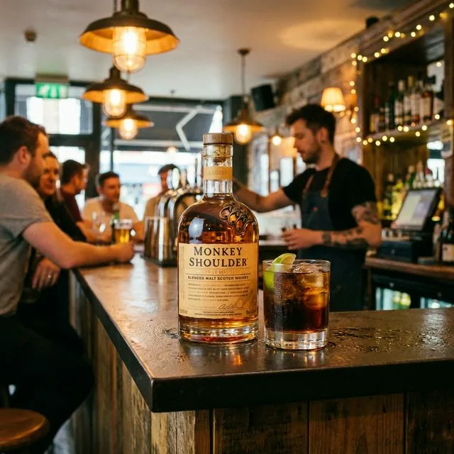

【ハズさない】30〜50代男性へのプレゼントに！予算5,000円で最高に喜ばれるウイスキー
上司や同僚、パートナーへのプレゼント。ネクタイやハンカチもいいですが、「ウイスキー」はさらに粋です。
「でも、相手の好みがわからない…」
大丈夫です。ウイスキーには「誰がもらっても嬉しい王道の1本」があります。
逆に、「これだけは避けたほうがいい（好みが分かれすぎる）」という地雷銘柄もあります。
失敗しないためのプレゼント選びのコツと、鉄板の銘柄を教えます。
1. マッカラン 12年 ダブルカスク
「シングルモルトのロールスロイス」と呼ばれる、世界で最も有名な高級ウイスキー。知名度抜群で、誰に渡しても「おっ、いいお酒だね！」と分かってもらえます。
味はシェリー樽由来のドライフルーツのような濃厚な甘み。
失敗したくないなら、これ一択です。
- 向いている相手: 上司、恩師、目上の人
- 価格帯: 8,000円〜9,000円（※価格高騰中ですが、予算が許せば最強です）
2. モンキーショルダー
3匹の猿が乗ったボトルのデザインが非常におしゃれ。
バーテンダーのために作られたウイスキーで、カクテルにしてもロックにしても美味しい万能選手です。
味はバニラやシナモンのような甘いスパイス感。
「センスがいいね」と言われたいならコレです。

（※画像生成中：コーラとライムで爽快に）
- 向いている相手: 同僚、友人、おしゃれな男性
- 価格帯: 3,000円〜4,000円
3. シーバスリーガル ミズナラ 12年
スコッチウイスキーですが、「日本人の舌に合うように」ブレンドされた日本限定品です。
日本原産のミズナラ樽で熟成されており、お香のようなオリエンタルな香りがします。
「日本限定」というストーリーも語れるので、プレゼントに最適です。
- 向いている相手: 父の日、義父、和食好きの人
- 価格帯: 3,500円〜4,500円
プレゼントに添える「一言」が大事
ウイスキーを渡すとき、「飲み方はお任せします」と言うのも良いですが、
「これ、ハイボールにすると美味しいらしいですよ」と一言添えるだけで、相手の楽しみが増えます。